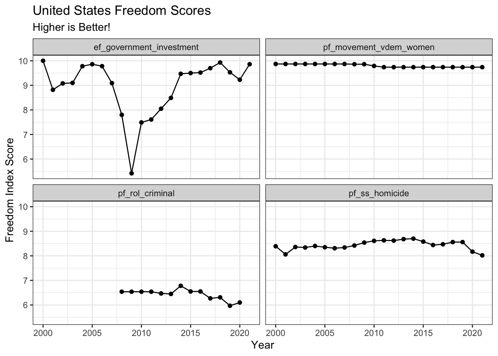

library(tidyverse)
library(stringr)
library(here)
library(ggrepel)
freedom <- read_csv(here("data/2023-Human-Freedom-Index-Data.csv")) |>
mutate(countries = str_remove(countries, ",.*")) |> mutate(countries = str_replace(countries, "Russian Federation", "Russia"))Introduction
Welcome to my 3rd Blog Post!
A preview of the data set I will be working with is shown below.
head(freedom[, c("year", "iso", "countries", "region", "hf_score",
"hf_rank", "hf_quartile")])# A tibble: 6 × 7
year iso countries region hf_score hf_rank hf_quartile
<dbl> <chr> <chr> <chr> <dbl> <dbl> <dbl>
1 2021 ALB Albania Eastern Europe 7.67 49 2
2 2021 DZA Algeria Middle East & North Africa 4.82 155 4
3 2021 AGO Angola Sub-Saharan Africa 5.76 122 3
4 2021 ARG Argentina Latin America & the Caribb… 6.85 77 2
5 2021 ARM Armenia Caucasus & Central Asia 7.99 33 1
6 2021 AUS Australia Oceania 8.52 14 1Just for clarification, the prefix hf corresponds to overall Human Freedom ratings/rankings, the prefix pf corresponds to Personal Freedom ratings/rankings, and the prefix ef corresponds to Economic Freedom ratings/rankings.
Underscores (_) indicate whether or not the variable is a main category or a subcategory. For example, the variable pf_religion is the personal freedom rating for religion, while pf_religion_suppression is the personal freedom rating for religious organization repression, which is a subcategory for freedom of religion.
The variables of interests that will potentially be utilized is hf_score, hf_rank, pf_rol_criminal, pf_movement_vdem, pf_movement_vdem_women, pf_assembly_parties, pf_expression_vdem, pf_identity_same, pf_ss_disappearances_fatalities, ef_government_investment, and pf_ss_homicide.
The questions of interests that will be investigated will be, “Which countries had the greatest change in overall ranking from 2000 to 2021?”, and “What overall insights can we obtained from the HFI data set?”.
Data Context
The data set utilized for this analysis is from the Human Freedom Index 2023 (HFI), which provides a comprehensive measurement of personal, civil, and economic freedom across the world. It was developed by Ian Vásquez, Fred McMahon, Ryan Murphy, and Guillermina Sutter Schneider.The HFI was co-published by the Cato Institute and the Fraser Institute. The HFI incorporated 86 distinct variables spanning areas such as rule of law, security, economic freedom, and civil liberties. Covering 165 jurisdictions representing 98.8% of the world’s population, the index offered insights into the state of freedom worldwide from the year 2000 to 2021 for a total of 3630 observations. All of the data likely is incorporated from an analysis of surveys, legal documents, and expert reports. The data set can be accessed for more information at Human Freedom Index 2023.
Visualizations
Change in Personal Freedom Rank per region over time.
freedom_plot <- freedom |> filter(!is.na(pf_rank))
ggplot(data = freedom_plot, aes(x = year, y = pf_rank)) +
geom_line(aes(group = countries), color = "gray70", alpha = 0.6) +
geom_smooth(size = 1.1, method = "loess", se = FALSE,alpha = 2) +
facet_wrap(~ region, ncol = 4) +
labs(x = "Year", y = "Personal Freedom Rank", title = "Change in Personal Freedom Rank by Region", subtitle = "Lower is Better!") +
scale_x_continuous(breaks = seq(min(freedom$year), max(freedom$year), by = 5)) + theme_bw()From the plot it looks as though the region that experienced the sharpest increase in ranking throughout the span of 21 years would have to be the Caucasus & Central Asia region. Also worth noting, the Middle East & North Africa region is seen to have a steady decrease in ranking. The East Asian region is also in a decrease albeit a slight and minimal one. It would be interesting to explore the factors contributing to these contrasting trends.
Change in Freedom Scores in Russia and United States
freedom_us <- freedom |> filter(countries == "United States") |> pivot_longer(cols = c("pf_movement_vdem_women", "ef_government_investment","pf_rol_criminal","pf_ss_homicide"), names_to = "variables", values_to = "scores") |> relocate("scores", "variables") |> filter(!is.na(scores))
us_plot <- ggplot(data = freedom_us, aes(x = year, y = scores)) + geom_point() + geom_line() + facet_wrap(~variables, ncol= 2) + theme_bw() + labs(title = "United States Freedom Scores", x = "Year", y = "Freedom Index Score", subtitle = "Higher is Better!")freedom_ru <- freedom |> filter(countries == "Russia") |> pivot_longer(cols = c("pf_movement_vdem_women", "ef_government_investment","pf_rol_criminal","pf_ss_homicide"), names_to = "variables", values_to = "scores") |> relocate("scores", "variables") |> filter(!is.na(scores))
rus_plot <- ggplot(data = freedom_ru, aes(x = year, y = scores)) + geom_point() + geom_line() + facet_wrap(~variables, ncol= 2) + theme_bw() + labs(title = "Russian Freedom Scores", x = "Year", y = "Freedom Index Score",subtitle = "Higher is Better!")
us_plot
rus_plotFrom the plot you can see the freedom of movement rating for women pf_movement_vdem_women, is consistently at 10 for the US, while in Russia the rating is still relatively high but more recently is slightly declining. This variable takes into account legal and social restrictions on movement as well as safety concerns and economic opportunities granted to women.
The variable ef_government_investment, represents the economic freedom rating for government investment, it focuses on how government spending impacts economic freedom. It values the score based on whether or not the government spending investments are free of corruption and transparent, if the government investment creates an unfair market, and if the government investment promote sustainable economic growth. There’s a lot of variability in the score for this variable in both countries! The US is seen to have a steady decline in scores in the mid to late 2000’s but has steadily shown improvement in the 2010s and into the 2020s. While in Russia the pattern is similar just more dramatic. Russia scored really badly in the early 2000s but picks up in the mid 2000s. The improvement is not linear but the over time, the score improves. A high score on this variable would indicate that government investments are done in a way that minimizes deceit and makes for a healthy business climate.
pf_rol_criminal is the personal freedom rating for protection from criminal activity or fair treatment under the law (ROL refers to Rule of Law). The variable is scored upon, police effectiveness, fairness of the judicial system, as well as overall public access to justice. The scores for the US simply hover around 6, while the score for Russia is in a steady decline, now hovering around a score of 2.5. A high score indicate that people feel secure from crime and have confidence that the legal system will treat them fairly.
The pf_ss_homicide variable is a personal freedom score for safety and security, specifically dealing with homicide rates. The variable takes into account the homicides rates and deaths that aren’t related to war or self-defense. In Russia, the homicide score is extremely low in the early 2000s. However an interesting trend is that over time the score rapidly increases, hitting a plateau from 2010 - 2015. The US on the other hand, has maintained a score hovering around 8.5 throughout the past 20 years. It is worth noting though, that there is a noticeable recent decline in homicide scores in the US. The most recent score of 8 in 2021 is the lowest it’s ever been in 20 years.
Top 20 countries for Overall Human Freedom Index Score for 2021
freedom_top20 <- freedom |>
group_by(countries) |>
filter(year == 2021) |>
reframe(hf_score) |>
arrange(desc(hf_score)) |>
mutate(countries = fct_reorder(.f = countries, .x = hf_score)) |>
slice(1:20)
ggplot(data = freedom_top20, aes(x = countries, y = hf_score)) +
geom_segment(aes(x = countries, xend = countries, y = 0, yend = hf_score, color = hf_score), linewidth = 1.5) +
geom_point(aes(color = hf_score), size = 4, alpha = 2) +
coord_flip() +
theme_minimal() + labs(title = "Top 20 Human Freedom Scores in 2021", x = "Countries", y = "Human Freedom Score") +
theme(panel.grid.major = element_line(linetype = "dashed"), panel.grid.minor = element_blank()) +
scale_color_viridis_c(name = "scale")From the plot it’s obvious that Switerland holds the highest overall Human Freedom Index Score for the year 2021 (9.01 / 10). With Czech Republic landing in the 20th place with a score of 8.38 / 10.
Bottom 20 countries for Overall Human Freedom Index Score for 2021
freedom_last20 <- freedom |>
group_by(countries) |>
filter(year == 2021) |>
reframe(hf_score) |>
arrange((hf_score)) |>
mutate(countries = fct_reorder(.f = countries, .x = hf_score)) |>
slice(1:20)
ggplot(data = freedom_last20, aes(x = countries, y = hf_score)) +
geom_segment(aes(x = countries, xend = countries, y = 0, yend = hf_score, color = hf_score), linewidth = 1.5) +
geom_point(aes(color = hf_score), size = 4, alpha = 2) +
coord_flip() +
theme_minimal() + labs(title = "Bottom 20 Human Freedom Scores in 2021", x = "Countries", y = "Human Freedom Score") +
theme(panel.grid.major = element_line(linetype = "dashed"), panel.grid.minor = element_blank()) +
scale_color_viridis_c(name = "scale")Out of the last 20 in Human Freedom Index Scores, Cameroon is at top with a score of 5.30 / 10. And last on the list is Syria with a score of 2.96 / 10.
Conclusion
Some limitations to consider regarding my approach to the Human Freedom Index (HFI) data set can be focused on data availability and a limited scope. The HFI takes data from all different kinds of sources. Doing this leaves to question the quality and comprehensiveness of the data since each source is different. I also could provide a bit more information into the variability of the overall scores and how much change has occurred on average to those scores. Also, aspects of such as health, income, environment quality, and education could have been taken into account.
The directions I could go with this data set is truly endless. For one, I could explore deeper the many other variables that were accounted for in the data set, 146 in total. I could also incorporate additional information regarding these countries to see if there are any patterns with scores and other factors such as education or health.
Connection to Class
The line graphs in the US and Russia plots reveal trends in HFI scores over time for each country and subcategory. The viewers can easily identify periods of improvement or decline in specific aspects of freedom. The facet wrap also allows for easier comparison of the different variables pertaining to freedom.
Also, the facet wrap in the regional freedom rank plot allows for comparisons across regions. The smoothing helps visualize the general trend of personal freedom rank over time within each region.
Finally, the separate plots for the top and bottom 20 countries focuses on overall HFI scores for the year 2021, allowing viewers to easily compare extremes in HFI scores in a way that is clear and concise.